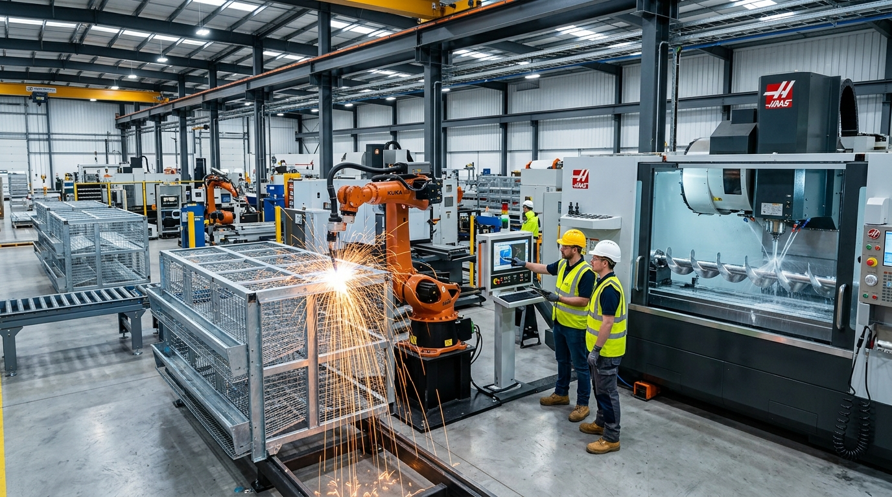
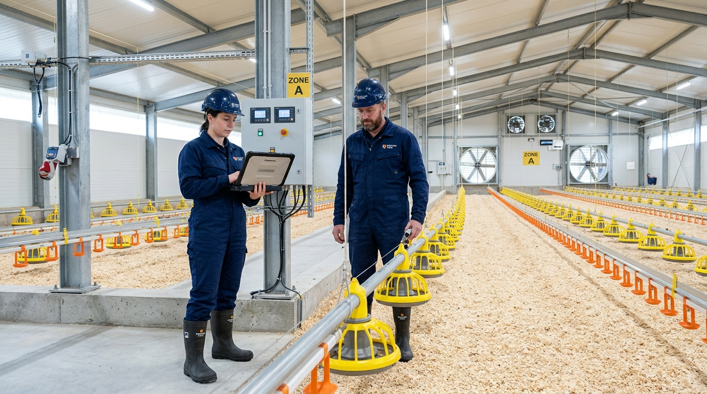
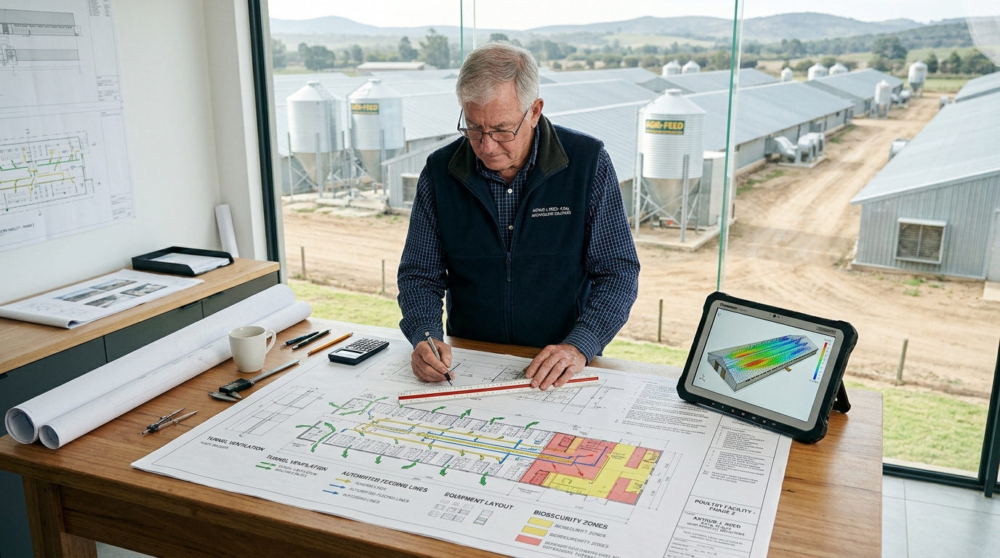
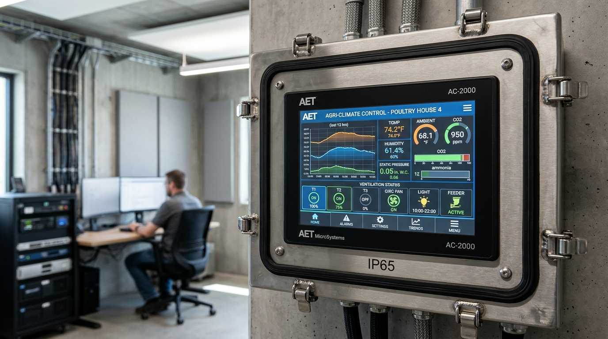
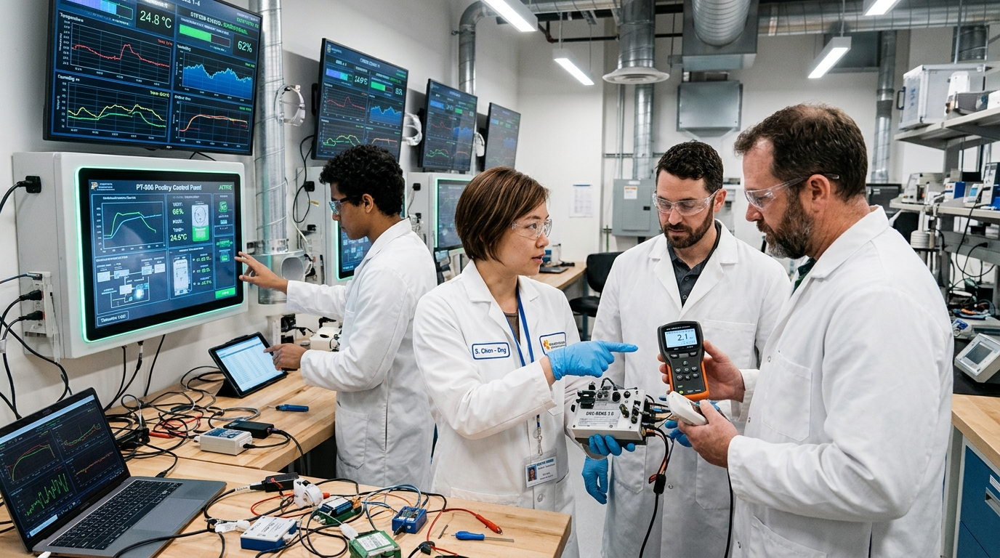
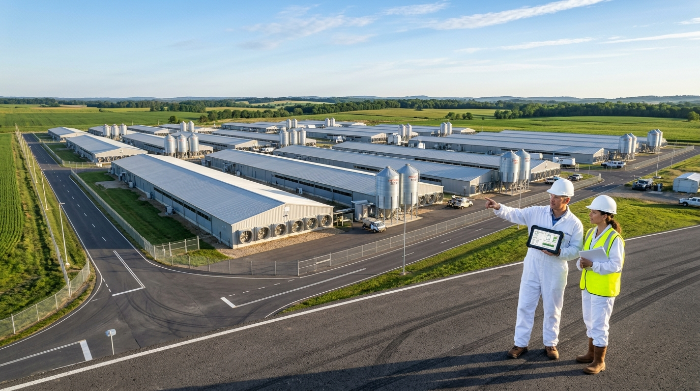

Operational Scope & Delivery Blueprints
Select any specialized service below to review on-site engineering deliverables, technical execution timelines, and SLA performance guarantees.

Poultry Equipment Supply & Ocean Freight Logistics
We engineer, manufacture, and export complete commercial poultry hardware suites directly from our certified production plants. Our export division manages multi-container sea freight, protective crating, customs documentation, and scheduled port delivery to commercial poultry operations in over 45 countries worldwide.
Key Operational Deliverables:

Turnkey Farm Setup, Mechanical Erection & Commissioning
Even premium equipment fails if assembled with misaligned pulleys, uneven cage foundations, or improperly tensioned flex augers. Our senior field engineers lead on-site teams to anchor structures, hang computerized ceiling winches, pressure-test drinking lines, and program central climate computers for turnkey handover.
Key Operational Deliverables:

Poultry Farm Consultation, CAD Blueprints & Biosecurity
Ensure maximum flock productivity before pouring a single slab of concrete. Our agricultural engineering consultants simulate negative-pressure tunnel airflow, calculate bird stocking density, model heating and cooling demands, and design strict biosecurity perimeters to prevent infectious disease introduction.
Key Operational Deliverables:

Preventative Equipment Maintenance & Multi-Point SLAs
Prevent costly equipment failures in the middle of a critical grow-out cycle. AviTech offers contract maintenance covering infrared motor thermal scanning, flex-auger tensioning, fan belt alignment, ultrasonic drinking line descaling, and emergency generator transfer switch testing.
Key Operational Deliverables:

24/7 Technical Remote Support & IoT Climate Diagnostics
Our agricultural engineering helpline operates 24/7/365 to safeguard flock welfare. With AviSmart IoT cloud connectivity, our technical engineers can remotely audit shed temperature graphs, static pressure curves, fan cycle stages, and water meter consumption logs to resolve issues in minutes.
Key Operational Deliverables:

Farm Automation Upgrades & Brownfield Shed Retrofits
Upgrade manual curtain-sided houses or labor-heavy bucket-feeding sheds into high-density computerized automated facilities. We retrofit existing civil structures with automated feeding lines, evaporative cooling wet walls, high-CFM exhaust fans, and centralized egg conveyors without rebuilding the shed from scratch.
Key Operational Deliverables:

OEM Equipment Replacement & Express Spare Parts
Keep your farm operating with zero downtime through our express genuine spare parts dispatch service. We stock high-tensile South African auger coils, virgin copolymer feed pans, medical-grade stainless drinking nipples, winch cables, electronic sensors, and heavy-duty fan belts ready for fast delivery.
Key Operational Deliverables:

Bulk Commercial Supply for Poultry Integrators & Co-ops
Designed for multi-million bird broiler integrators, commercial layer complexes, and government agricultural development programs. We provide container-load volume pricing, standardized shed fleet replication, customized private label options, and dedicated enterprise account directors.